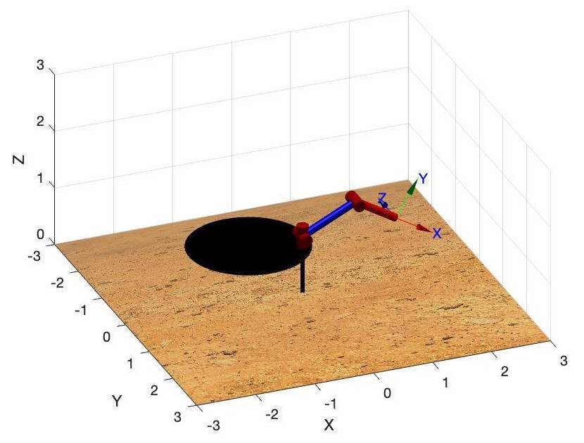
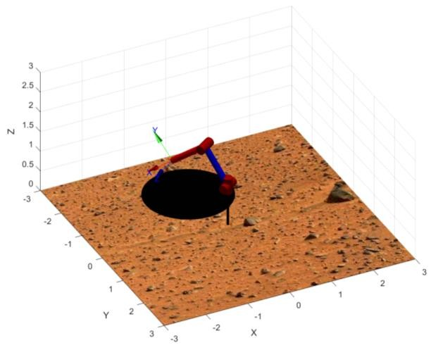
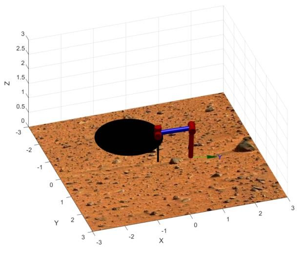
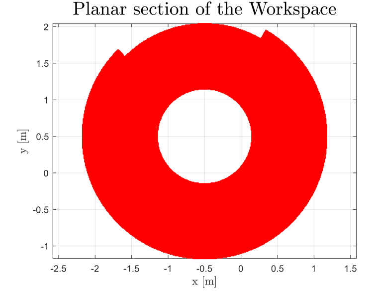
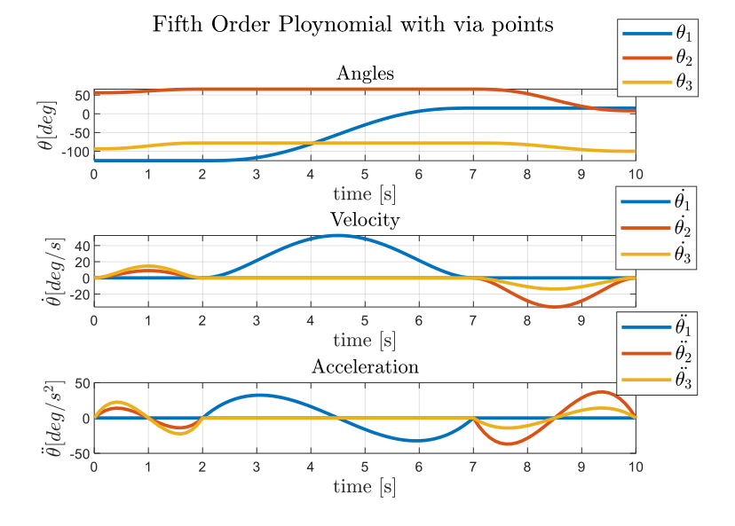
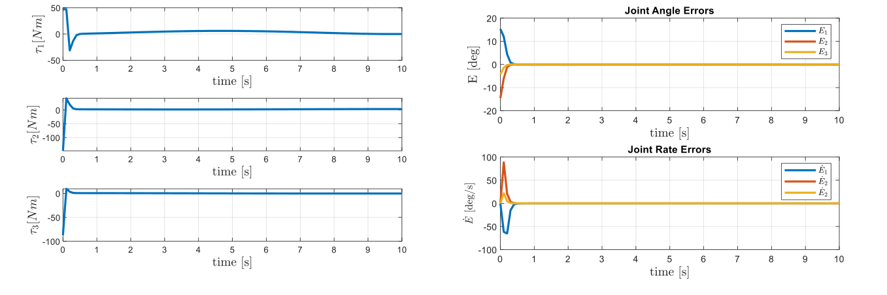

Back to ProjectsTorna a Progetti
Space manipulator: kinematics, dynamics and controlManipolatore spaziale: cinematica, dinamica e controllo
Final exercise, Space Robotic Systems, Sapienza University of Rome, 2020/2021
Esercizio finale, Space Robotic Systems, Sapienza Università di Roma, 2020/2021
A simplified model of the Instrument Deployment Arm of NASA's InSight lander, which placed the seismometer and the heat probe on the surface of Mars. In MATLAB, with the Robotics Toolbox, I took the arm through the full chain of manipulator design: kinematics, workspace, trajectory generation, dynamics, and linear and nonlinear control, ending with a test of the controller on a wrong model of the arm.
Un modello semplificato dell'Instrument Deployment Arm del lander InSight della NASA, che ha posato il sismometro e la sonda termica sulla superficie di Marte. In MATLAB, con il Robotics Toolbox, ho portato il braccio attraverso l'intera catena di progetto di un manipolatore: cinematica, spazio di lavoro, generazione delle traiettorie, dinamica, e controllo lineare e non lineare, concludendo con una prova del controllore su un modello errato del braccio.
- 3revolute jointsgiunti rotoidali
- 10 spick and place manoeuvremanovra di presa e rilascio
- 4trajectory profiles comparedprofili di traiettoria confrontati
- < 1 sto cancel an initial error of 15°per annullare un errore iniziale di 15°
The armIl braccio
The arm has three revolute joints (shoulder azimuth, shoulder elevation and elbow) and two links of 1 m and 0.8 m, modelled as hollow cylinders in a carbon fibre and titanium mix. Each joint is driven by a DC motor through a gearbox with a 125:1 or 100:1 ratio, with its own torque and angle limits. The shoulder sits 1 m above the ground on the lander deck, and the task is to pick a tool from the deck and place it on the Martian surface.
Il braccio ha tre giunti rotoidali (azimut della spalla, elevazione della spalla e gomito) e due bracci da 1 m e 0,8 m, modellati come cilindri cavi in una miscela di fibra di carbonio e titanio. Ogni giunto è azionato da un motore in corrente continua tramite un riduttore con rapporto 125:1 o 100:1, con i propri limiti di coppia e di angolo. La spalla si trova a 1 m da terra sul ponte del lander, e il compito è prendere uno strumento dal ponte e posarlo sulla superficie di Marte.

Kinematics and workspaceCinematica e spazio di lavoro
I described the arm with Denavit-Hartenberg parameters and derived the transformation from the base to the tool. The inverse kinematics is solved in closed form with an algebraic method: it gives four solutions, two of which violate the joint limits. Of the remaining two I chose elbow up, because elbow down would drive the elbow through the lander deck when picking the tool. Running the inverse kinematics over a grid of points gives the section of the workspace 35 cm above the ground: a ring, with a small notch where the azimuth joint reaches its limit.
Ho descritto il braccio con i parametri di Denavit-Hartenberg e ricavato la trasformazione dalla base all'utensile. La cinematica inversa è risolta in forma chiusa con un metodo algebrico: dà quattro soluzioni, due delle quali violano i limiti dei giunti. Delle due rimanenti ho scelto il gomito alto, perché con il gomito basso il braccio attraverserebbe il ponte del lander al momento della presa. Applicando la cinematica inversa su una griglia di punti si ottiene la sezione dello spazio di lavoro a 35 cm da terra: una corona circolare, con una piccola tacca dove il giunto di azimut raggiunge il suo limite.



Trajectory generationGenerazione delle traiettorie
The tool moves from the deck to the ground in 10 s, updated at 10 Hz. I generated the joint trajectories in four ways: quintic polynomials and linear functions with parabolic blends, each with and without via points. The two via points make the manoeuvre safe: first the tool is lifted 40 cm straight up from the deck, then the arm rotates in azimuth, and only then it lowers the tool to the ground. Quintic polynomials give the smoothest motion, while parabolic blends pass close to, but not exactly through, the via points.
L'utensile passa dal ponte al terreno in 10 s, con aggiornamento a 10 Hz. Ho generato le traiettorie dei giunti in quattro modi: polinomi di quinto ordine e funzioni lineari con raccordi parabolici, ciascuno con e senza punti di via. I due punti di via rendono sicura la manovra: prima l'utensile viene sollevato di 40 cm in verticale dal ponte, poi il braccio ruota in azimut, e solo dopo abbassa l'utensile sul terreno. I polinomi di quinto ordine danno il moto più regolare, mentre i raccordi parabolici passano vicino ai punti di via ma non esattamente su di essi.

DynamicsDinamica
I derived the equations of motion symbolically with the iterative Newton-Euler algorithm, in the form τ = M(θ)θ̈ + V(θ, θ̇) + G(θ), and rewrote them in configuration space with separate Coriolis and centrifugal terms. Viscous and Coulomb friction of the motors, reflected through the gearboxes, complete the model, and the motor inertias are added to the mass matrix. From each trajectory I then computed the torques the actuators must deliver, saturated at their maximum values.
Ho ricavato simbolicamente le equazioni del moto con l'algoritmo iterativo di Newton-Eulero, nella forma τ = M(θ)θ̈ + V(θ, θ̇) + G(θ), e le ho riscritte nello spazio delle configurazioni con termini di Coriolis e centrifughi separati. L'attrito viscoso e di Coulomb dei motori, riportato attraverso i riduttori, completa il modello, e le inerzie dei motori sono aggiunte alla matrice di massa. Da ogni traiettoria ho poi calcolato le coppie che gli attuatori devono fornire, saturate ai loro valori massimi.
ControlControllo
Both controllers start from a wrong initial pose, about 15° away from the planned trajectory, and use a partitioned trajectory following law with gains chosen for critical damping and a closed loop natural frequency below half the lowest structural resonance.
Entrambi i controllori partono da una posa iniziale errata, a circa 15° dalla traiettoria pianificata, e usano una legge partizionata a inseguimento di traiettoria con guadagni scelti per lo smorzamento critico e una frequenza naturale ad anello chiuso inferiore a metà della risonanza strutturale più bassa.
- Linear control. Each joint is treated as an independent second order system with constant effective inertia, dominated by the motor through the gearbox. The error is cancelled in under a second and settles at about 0.1°.
- Nonlinear control. A computed torque law uses the full model, M(θ), V, G and friction, to linearise and decouple the joints. The error is cancelled just as fast and settles at the level of numerical precision.
- Wrong model. Running the nonlinear controller with link lengths of 1.15 m and 0.73 m instead of 1 m and 0.8 m, the decoupling is no longer exact, but the arm still follows the trajectory with a residual error of about 0.02°, better than the linear controller with a perfect model.
- Controllo lineare. Ogni giunto è trattato come un sistema del secondo ordine indipendente con inerzia effettiva costante, dominata dal motore attraverso il riduttore. L'errore si annulla in meno di un secondo e si stabilizza a circa 0,1°.
- Controllo non lineare. Una legge a coppia calcolata usa il modello completo, M(θ), V, G e attrito, per linearizzare e disaccoppiare i giunti. L'errore si annulla altrettanto rapidamente e si stabilizza al livello della precisione numerica.
- Modello errato. Usando il controllore non lineare con bracci di 1,15 m e 0,73 m invece di 1 m e 0,8 m, il disaccoppiamento non è più esatto, ma il braccio segue comunque la traiettoria con un errore residuo di circa 0,02°, migliore del controllore lineare con modello perfetto.
